追試結果：Expert Advice はどこで効くのか
実験レポートで「効かない条件」を確認したので、 今度は逆に効く条件を探しました。仮説は 2 つ。 (A) 勝つべき Expert が時間とともに入れ替わる、 (B) 強さが同程度で外し方の違う Expert が複数いる。 これを人工データ 1 つと実データ 3 つで検証します。
| 追試 | データ | 検証したい仮説 | 結果 |
|---|---|---|---|
| 追試 1 | 合成レジーム切替 | (A) 純粋な形で | 最良固定 Expert 比 −29.8% |
| 追試 2 | M4 Hourly（414 系列） | (B) 系列間の多様性 | −22.9%、系列の 62% で勝利 |
| 追試 3 | ETTh1（7 変数） | (A)+(B) 実データで | 7 変数すべてで勝利 |
| 追試 4 | COVID-19 期の電力需要 | (A) 実世界の構造変化 | 4 か国すべてで −40% 以上 |
追試 1：レジーム切替（人工データ）
まず、仮説 (A) をいちばん純粋な形で見ます。生成過程を途中で 4 回切り替えた系列を作り、 各区間で「正解の Expert」が入れ替わるようにしました。 Expert は性格のはっきり違う 8 本だけに絞り、重みの動きが読めるようにしています。
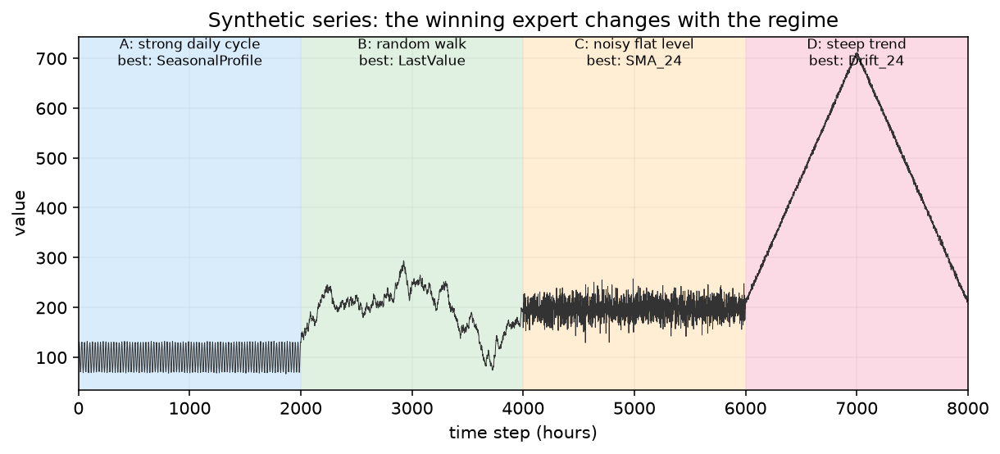
| レジーム | その区間で最良の Expert | その MAE | LastValue の MAE |
|---|---|---|---|
| A: strong daily cycle | SeasonalProfile | 0.975 | 5.075 |
| B: random walk | LastValue | 2.397 | 2.397 |
| C: noisy flat level | SMA_24 | 14.358 | 19.773 |
| D: steep trend | Drift_24 | 2.604 | 3.384 |
全区間を通した最良の固定 Expert は LastValue ですが、どの区間でも一番にはなれていません。これが「乗り換えれば勝てる」余地です。
結果
| アルゴリズム | 平均 MAE | 最良固定 Expert 比 |
|---|---|---|
| Equal Weight | 22.471 | +189.2% |
| Follow the Leader | 7.776 | +0.1% |
| Hedge (tuned eta) | 7.763 | -0.1% |
| Meta-eta Hedge | 7.777 | +0.1% |
| AdaHedge | 7.774 | +0.1% |
| Fixed-Share | 5.453 | -29.8% |
| ML-Poly | 7.827 | +0.7% |
| — 最良固定 Expert（LastValue、事後） | 7.770 | 0.0% |
| — 切り替えオラクル（区間ごとに最良、事後） | 5.264 | -32.3% |
Fixed-Share は切り替えオラクル（事後に区間ごとの最良を選べた場合）にかなり近いところまで到達しています。
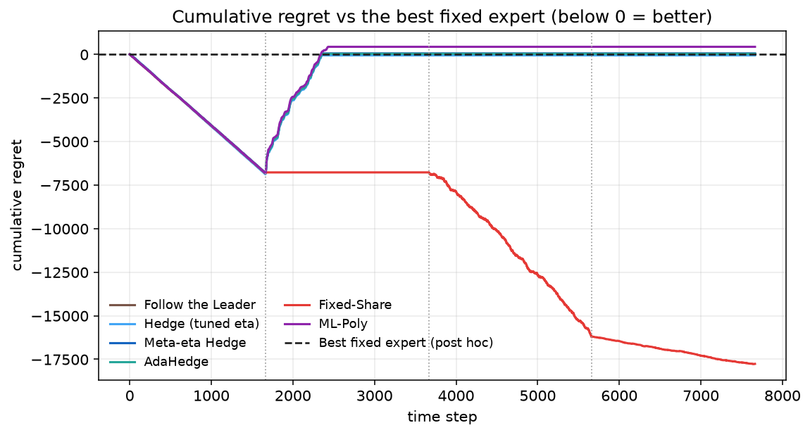
なぜこうなるのかは、重みの動きを見ると一目で分かります。
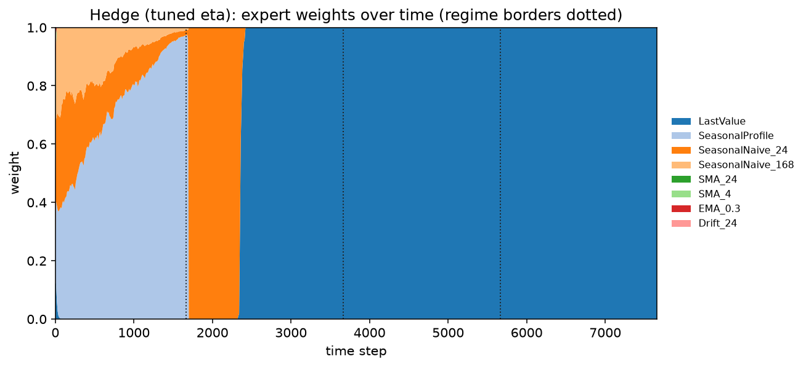
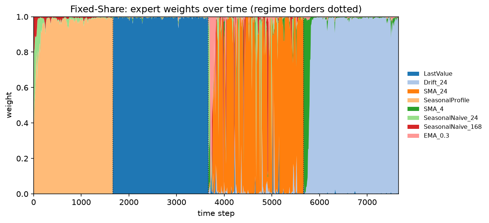
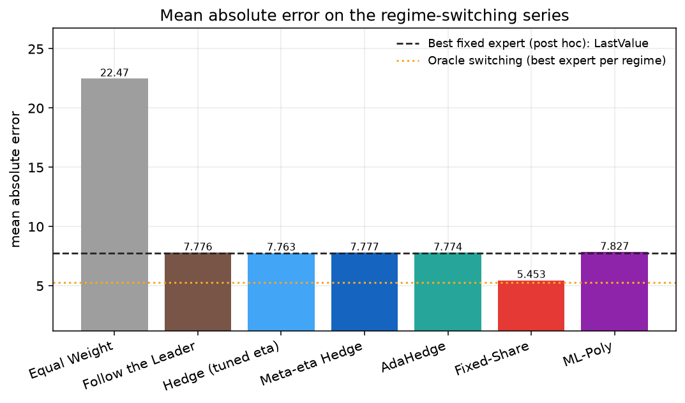
唯一のつまみ α はどれくらい敏感か
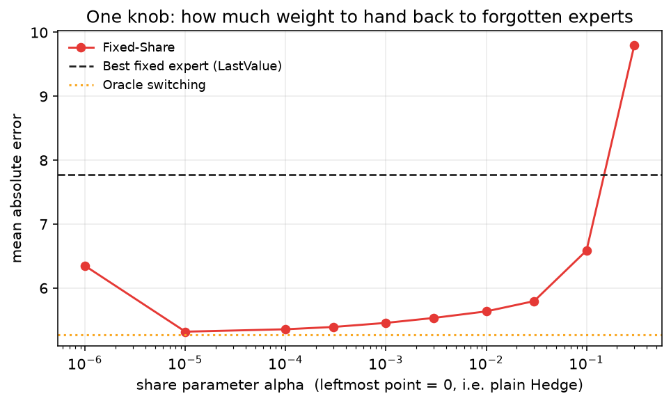
追試 2：M4 Hourly（実データ 414 系列）
次は仮説 (B)。M4 コンペティションの hourly 部門 414 系列を、1 系列ずつ独立に 1 ステップ先オンライン予測で解きます。系列ごとにスケールが違うので、 各系列の助走区間における naive 予測 MAE で割った scaled MAE で揃えました。
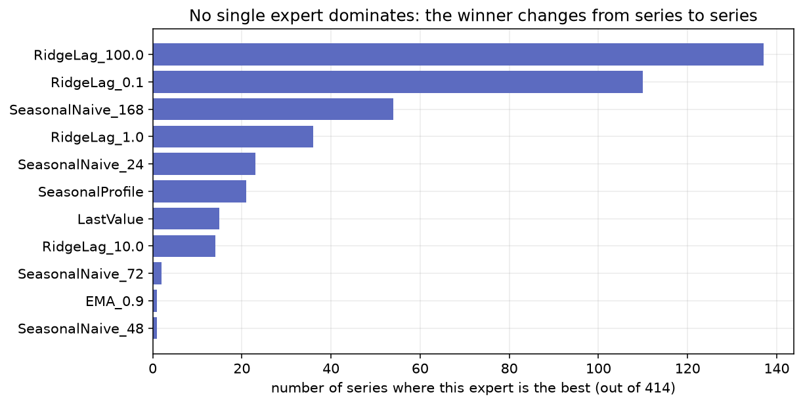
そこで比較対象を実務的なものに変えます。「事後に分かる最良の 1 本」ではなく、 全系列の平均成績で最良だった Expert を事前に 1 本選んで、全系列に適用する という、実際にやりそうな戦略です。
| アルゴリズム | scaled MAE | 事前選択比 | 勝率 |
|---|---|---|---|
| Equal Weight | 2.1869 | +303.1% | 1% |
| Follow the Leader | 0.4505 | -17.0% | 44% |
| Hedge (tuned eta) | 0.4389 | -19.1% | 59% |
| Meta-eta Hedge | 0.4541 | -16.3% | 40% |
| AdaHedge | 0.4452 | -17.9% | 51% |
| Fixed-Share | 0.4182 | -22.9% | 62% |
| ML-Poly | 0.4501 | -17.0% | 43% |
| — 事前に選んだ最良の 1 本（RidgeLag_0.1） | 0.5425 | 0.0% | — |
| — 系列ごとに最良を選べた場合（事後オラクル） | 0.4424 | -18.5% | — |
Fixed-Share は事後オラクル（系列ごとに最良の 1 本を選べた場合）も下回りました。系列内でも重みを動かせるためです。
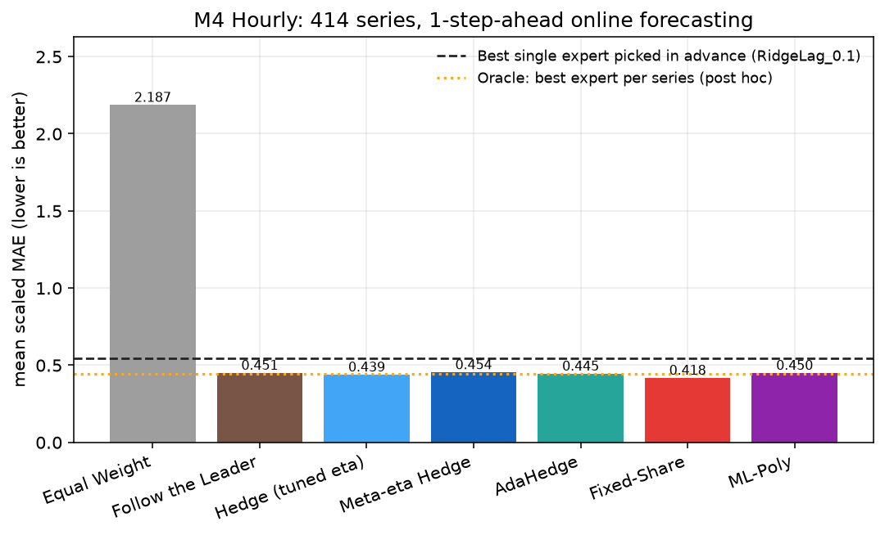
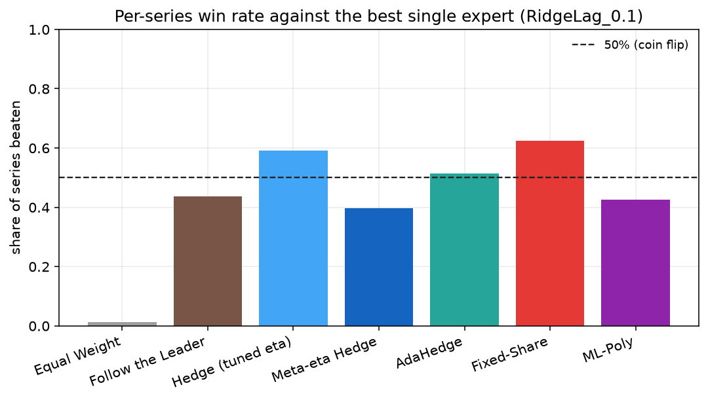
追試 3：ETTh1（実データ・翌日予測）
ETT（Electricity Transformer Temperature）データセットの 1 時間粒度版、 2016-07 から 2018-06 までの 17,420 時点・7 変数を、 翌日（24 時間先）予測で評価しました。最初の約 6 か月を助走・学習に使っています。
| 変数 | 最良固定 Expert | その MAE | Meta-η Hedge | AdaHedge | ML-Poly | Fixed-Share |
|---|---|---|---|---|---|---|
| HUFL | RidgeLag_0.1 | 3.040 | +0.1% | -0.2% | +0.0% | -33.7% |
| HULL | EMA_0.7 | 0.840 | -0.0% | -0.1% | +0.0% | -21.5% |
| MUFL | EMA_0.9 | 2.888 | +0.1% | +0.0% | +0.1% | -36.4% |
| MULL | RidgeLag_0.1 | 0.723 | +0.0% | -0.1% | +0.0% | -21.0% |
| LUFL | EMA_0.9 | 0.529 | +0.1% | -0.3% | +0.1% | -32.1% |
| LULL | EMA_0.5 | 0.202 | +0.1% | -0.2% | +0.0% | -27.1% |
| OT | RidgeLag_100.0 | 1.909 | +0.0% | +0.0% | +0.1% | -43.5% |
変数によって最良 Expert が Ridge 系だったり EMA 系だったりと入れ替わります。
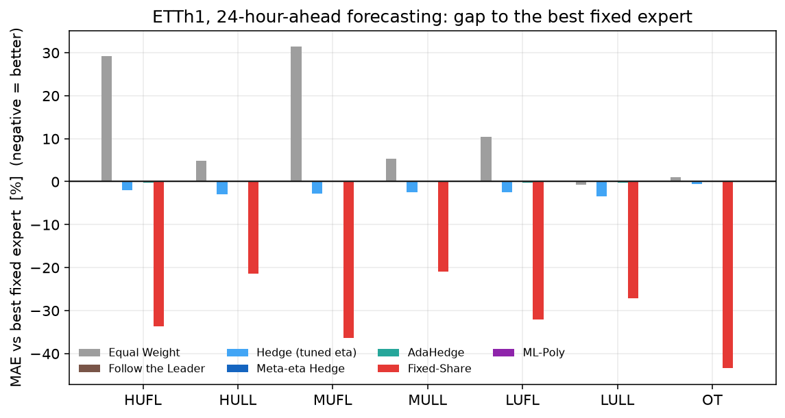
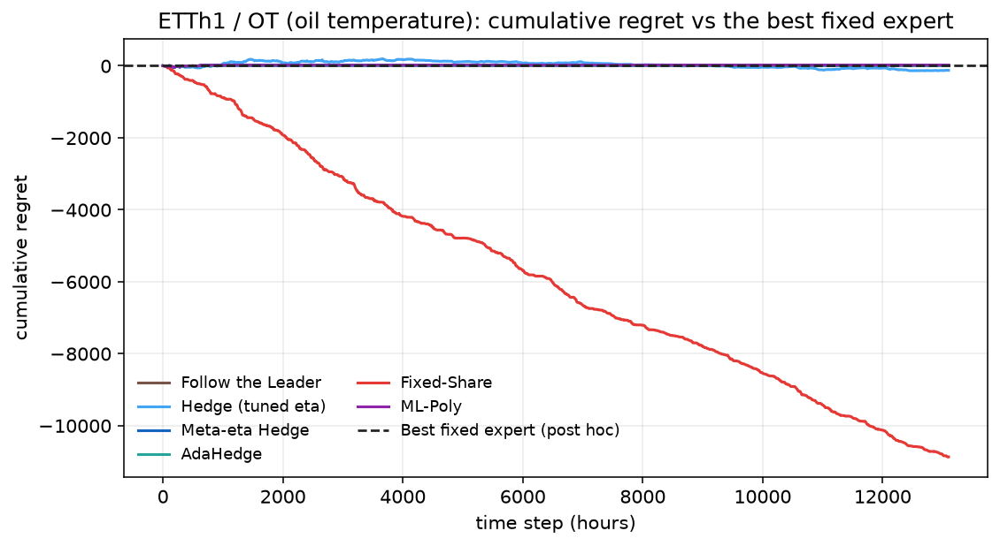
追試 4：COVID-19 ロックダウン期の電力需要
最後に、実世界で起きた大規模な構造変化です。2020 年 3 月のロックダウンで 欧州各国の電力需要は水準も日内形状も一変しました。文献では、この時期に 静的なモデルが大きく劣化し、適応的な手法が有効だったと報告されています。
Open Power System Data の 1 時間粒度実測需要（ドイツ・スペイン・フランス・イタリア）を使い、 Expert の学習は 2015〜2018 年まで（COVID を一切知らない状態）、 評価は 2019-01 以降の翌日予測としました。
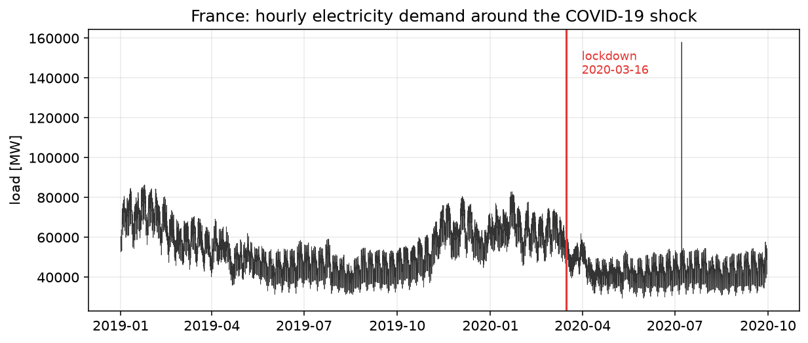
結果
| 国 | 事前に選ばれた Expert | その MAE [MW] | Meta-η Hedge | AdaHedge | ML-Poly | Fixed-Share |
|---|---|---|---|---|---|---|
| Germany | RidgeLag_100.0 | 2,079 | +0.0% | +0.0% | +0.0% | -42.6% |
| Spain | RidgeLag_100.0 | 931 | +0.0% | +0.0% | +0.0% | -39.7% |
| France | RidgeLag_100.0 | 1,828 | +0.0% | +0.0% | +0.0% | -46.4% |
| Italy | RidgeLag_100.0 | 1,764 | +0.0% | +0.0% | +0.0% | -48.0% |
Hedge 系がすべて ±0.0% なのは、重みが事実上その 1 本に集中しきっているためです。
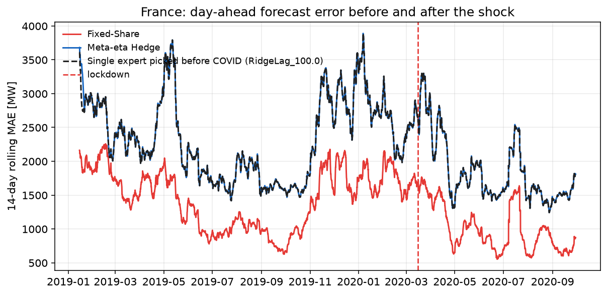
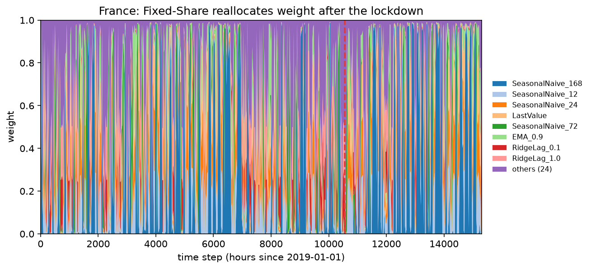
正直な報告：期待した現象は再現しなかった
「COVID でモデルが壊れ、適応手法だけが生き残った」という筋書きを期待していましたが、 この Expert 群では再現しませんでした。季節をそろえて （3/16〜6/30 の 2019 年と 2020 年を）比べると、事前に選んだ Expert の誤差はむしろ 減っています。ロックダウン期は需要水準そのものが下がり、 予測しやすくなった効果の方が大きかったためです。
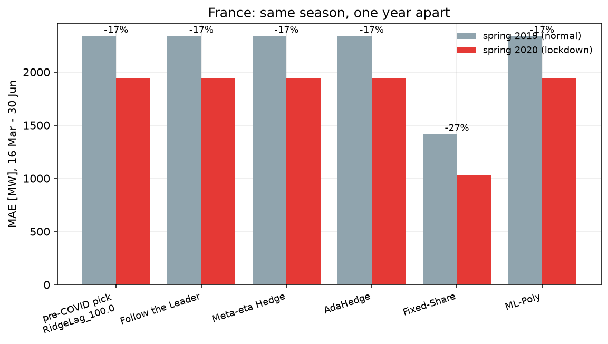
では、何が壊れたのか
Expert を個別に見ると、原因ははっきりします。
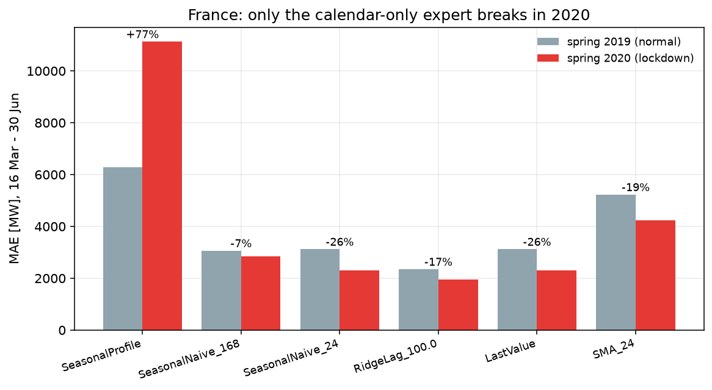
| Expert | 2019 年春 | 2020 年春（ロックダウン） | 変化 |
|---|---|---|---|
| SeasonalProfile | 6,281 | 11,122 | +77.1% |
| SeasonalNaive_168 | 3,055 | 2,850 | -6.7% |
| SeasonalNaive_24 | 3,111 | 2,297 | -26.2% |
| RidgeLag_100.0 | 2,340 | 1,942 | -17.0% |
| LastValue | 3,111 | 2,297 | -26.2% |
| SMA_24 | 5,219 | 4,226 | -19.0% |
直近の観測値を使わない SeasonalProfile だけが大きく悪化しています。集約の価値は、こうした壊れたモデルを自動的に切り捨てられる点にあります。
壊れたのは 「曜日 × 時刻」の平均プロファイルのように、過去の実績だけで作り、 直近の観測を見ないモデルでした。文献で報告された劣化も、まさにこの種の （気象と暦を説明変数にする）モデルで起きたものです。
一方、本プロジェクトの Expert はほとんどが直近ラグを使うため、 個々の Expert が勝手に新しい水準へ追随してしまい、 集約が救うべき「壊れたモデル」がそもそも少なかった、というのが真相です。 集約の価値は「壊れたモデルを切り捨てられること」にあり、その意味では SeasonalProfile を捨てられた点で確かに機能しています。
まとめ：効く条件チェックリスト
4 つの追試から言えることを、実務で使える形にまとめます。
-
勝つべき Expert が入れ替わるか？
入れ替わるなら Fixed-Share が効きます。入れ替わらないなら、どの集約手法を使っても 最良の 1 本と同じ結果にしかなりません。まず「区間ごとの最良 Expert」を集計して確認してください。 -
Expert の強さは同程度か？
1 本だけ突出して強い構成では利得が出ません。同じ family のパラメータ違いを並べるより、 外し方が違うモデル（直近ラグ型・暦型・トレンド型）を混ぜる方が効きます。 -
タスクは十分難しいか？
1 ステップ先予測は「直近値」がほぼ正解で、工夫の余地がありません。 翌日予測など、Expert の得意・不得意が分かれるホライズンを選んでください。 -
重みが過去に引きずられていないか？
Hedge の重みは累積損失だけで決まるため、時間が経つほど動かなくなります。 Fixed-Share の \(\alpha\)（\(10^{-5}\)〜\(10^{-2}\) の広い範囲で有効）を入れるだけで解決します。
再現方法
uv sync --all-extras
uv run python scripts/download_data.py # M4 / ETTh1 / OPSD / UCI を取得
uv run python scripts/experiments/exp1_regime.py
uv run python scripts/experiments/exp2_m4.py
uv run python scripts/experiments/exp3_etth1.py
uv run python scripts/experiments/exp4_covid.py
uv run python scripts/build_site.py # このページの表を更新使用データ： M4 Competition（M4 Hourly）、 ETDataset（ETTh1）、 Open Power System Data（1 時間粒度実測需要）、 UCI Electricity Load Diagrams 2011-2014。